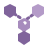

FEVA 整体架构
以多层折面表达统摄事实组织与证据核验的整体机制，不代指独立执行模块。
双源合证主标志 · 折面视觉语言的 FEVA 功能图标
主标志强调双来源汇合与核验；功能图标沿用统一切面语言，模块名称负责解释含义。
以多层折面表达统摄事实组织与证据核验的整体机制，不代指独立执行模块。
表达待回答事实及其依赖顺序。
表达不同来源间的受控对象关联。
表达事实定义与比较口径核对。
表达事实状态及其证据来源记录。
表达补查预算与停止边界。
表达结构化数据查询能力。
表达文档检索与原文定位能力。

表达 KAG 研究支线，不表示已接入主链路。
查看业务库连接状态及当前结构目录中的表、字段与关联。
源图标：web/public/brand/ · 规则见 docs/品牌图标设计规范_v0.3.md。通用交互图标仍由 AppIcon 提供。